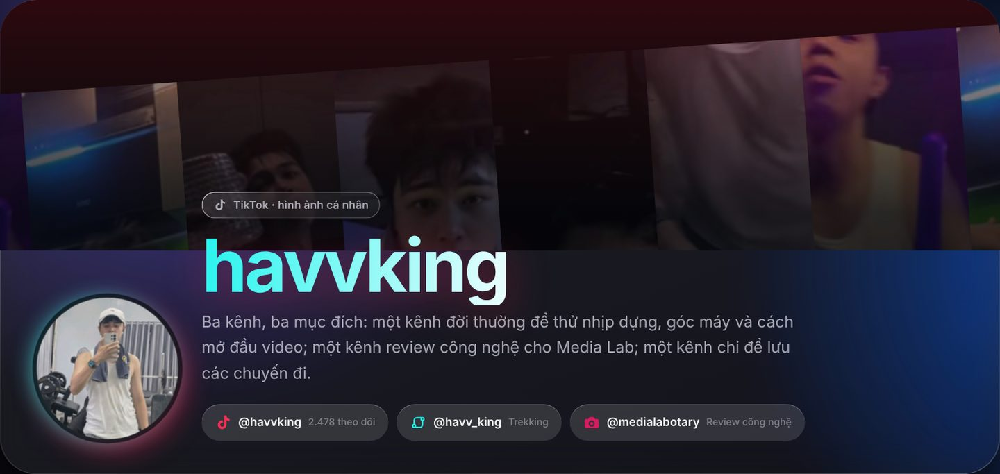

Phạm Việt Hà
Phạm Việt Hà
Mục lục
Nếu tìm Phạm Việt Hà trên TikTok, bạn sẽ gặp ba kênh với tên khá giống nhau. Đó không phải tài khoản giả: đó là ba kênh, ba mục đích. Bài này giúp bạn phân biệt chúng.

So sánh nhanh
| Kênh | Mục đích | Số liệu (10/2026) |
|---|---|---|
| @havvking | Đời thường, thử nghiệm dựng video, có TikTok Shop | 2.478 người theo dõi · 110 nghìn lượt thích · 13 video |
| @medialabotary | Review công nghệ cho Media Lab | 127 người theo dõi · 5.640 lượt thích · 33 video |
| @havv_king | Du lịch, trekking | 19 người theo dõi · 814 lượt thích · 9 video |
@havvking: kênh chính
Kênh mang đúng nghệ danh HAVVKING. Đây là nơi Phạm Việt Hà đăng đời thường và thử nhịp dựng, góc máy, cách mở đầu video. Video cao nhất đạt 132,5 nghìn lượt xem.
 Đọc thêmTikTok @havvking: kênh đời thường và thử nghiệm dựng video của Phạm Việt Hà
Đọc thêmTikTok @havvking: kênh đời thường và thử nghiệm dựng video của Phạm Việt Hà
@medialabotary: review công nghệ
Media Lab là kênh review công nghệ: bàn phím cơ, chuột, PC gaming. Phạm Việt Hà xây kênh này khi làm Digital Marketing tại Medialabotary. Video cao nhất, về bàn phím Machenike KT68 Pro, đạt 15,3 nghìn lượt xem.

 Đọc thêmMedia Lab (@medialabotary): kênh review công nghệ và website bách hoá điện tử của Phạm Việt Hà
Đọc thêmMedia Lab (@medialabotary): kênh review công nghệ và website bách hoá điện tử của Phạm Việt Hà
@havv_king: chỉ để lưu chuyến đi
Lời giới thiệu của kênh nói rõ: chỉ để đăng du lịch. Đây là nơi lưu lại các chuyến đi, trekking và cảnh đẹp dọc đường. Kênh nhỏ, không chạy theo lượt xem, và đó là chủ ý.
 TikTok @havv_kingKênh du lịch, trekking của Phạm Việt Hà
TikTok @havv_kingKênh du lịch, trekking của Phạm Việt Hà
Vì sao tách ba kênh?
TikTok gợi ý video dựa trên những người đã xem kênh của bạn. Trộn đời thường, review bàn phím và cảnh trekking vào một kênh sẽ làm thuật toán khó đoán ai nên xem. Tách ba kênh giúp mỗi kênh có đúng khán giả của nó.
Số liệu trong bài lấy từ TikTok vào tháng 10/2026.